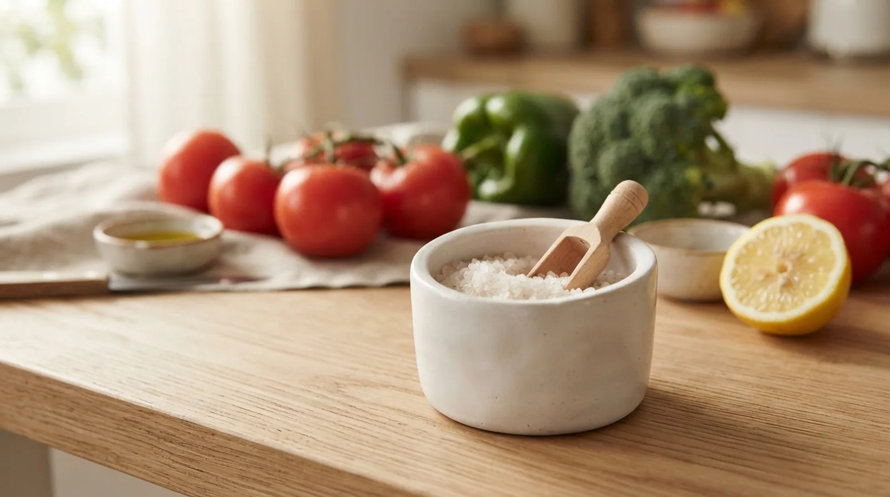

Cardiólogo en Elche · Clínica Elche Salud
Por qué reducirla la baja, cuánta es razonable y de dónde viene realmente la que comes

«Reduce la sal» es uno de los consejos más repetidos en cualquier consulta por tensión alta. Pero casi nunca se concreta: ¿cuánta es «mucha»?, ¿de dónde sale realmente la sal que tomas si apenas usas el salero?, ¿cuánto se nota de verdad en la tensión? Vamos con las tres respuestas.
La sal es cloruro de sodio, y es el sodio el que importa aquí. El sodio retiene agua: cuanto más tomas, más líquido retiene el cuerpo, más aumenta el volumen de sangre que circula por las arterias y mayor es la presión que ese volumen ejerce sobre sus paredes.
No todas las personas son igual de sensibles a la sal. Por eso el mismo exceso sube más la tensión a unas personas que a otras, y por eso el beneficio de reducirla es mayor en quien ya tiene hipertensión que en quien tiene la tensión normal.
Esto no es una opinión: está medido en decenas de ensayos clínicos. Una revisión Cochrane que agrupó esos ensayos encontró que una reducción moderada y mantenida del consumo de sal —de media, unos 4,4 g al día menos, aproximadamente una cucharadita— se traduce en esta caída de la tensión:
No sustituye a la medicación cuando esta es necesaria, pero es un efecto real, medible y gratuito, que además se suma al del fármaco. Y fíjate en el dato clave: la bajada es mayor justo en quien más la necesita. Si quieres repasar qué cifras se consideran hipertensión y cómo se diagnostica, lo explicamos en nuestra página sobre hipertensión arterial.
La Organización Mundial de la Salud recomienda no superar los 5 gramos de sal al día —poco más de una cucharadita, unos 2 gramos de sodio—. A nivel mundial se consume de media más del doble: unos 10,8 gramos al día.
En España, el estudio ANIBES midió lo que de verdad comemos a través de los alimentos, sin contar la sal que cada uno añade con el salero o al cocinar, y encontró esto:
Es decir: antes de añadir una pizca en la mesa o al cocinar, buena parte de la población ya está en el límite recomendado solo con lo que trae la comida de por sí. Contando la sal que se añade a mano, lo habitual es superarlo con claridad.
Aquí está el malentendido más frecuente en consulta: la gente vigila el salero y descuida lo que realmente aporta la mayor parte del sodio. La sal añadida a mano suele ser la porción más pequeña del total; el grueso llega ya incorporado en alimentos procesados, antes de que decidas nada en la mesa.
No sabe especialmente salado, pero por la cantidad que se consume es uno de los principales aportes de sodio en la dieta española.
Jamón, chorizo, beicon y queso curado están entre los alimentos con más sal por ración habitual.
Las conservas en lata o salmuera y los precocinados llevan sal añadida para conservarse y dar sabor, no solo por gusto.
Patatas fritas y aperitivos salados, salsas industriales, pastillas de caldo y sopas de sobre son de los productos con más sal por 100 g.
Busca «sal» o «sodio» en la información nutricional. Por debajo de 0,3 g de sal por 100 g se considera un producto bajo en sal.
Cuanto menos pase por un envase o un paquete antes de llegar a tu plato, menos sal escondida lleva. Partir de alimentos frescos es la forma más simple de controlarla.
Ajo, limón, especias y hierbas aromáticas dan sabor sin aportar sodio. El paladar se acostumbra en pocas semanas.
Son los que más sal aportan sin dar sensación de «comida salada». Revisa con qué frecuencia los tomas, no solo cuánta sal añades tú.
Hacerlo de golpe resulta muy soso. Repartido en varias semanas, el paladar se adapta sin que la comida deje de apetecer.
Aumentar el potasio —frutas, verduras, legumbres, frutos secos— complementa el efecto de reducir el sodio. Si quieres un patrón alimentario completo que ya integra ambos principios, está la dieta DASH, uno de los que cuentan con más evidencia para el control de la tensión arterial.
No. Si tu tensión ya requiere tratamiento farmacológico, reducir la sal no lo reemplaza, pero sí lo complementa: en los propios ensayos clínicos el efecto se suma al del fármaco. Es uno de los pocos cambios de hábito con un beneficio medido en milímetros de mercurio, no solo en sensación de bienestar, y tiene más peso cuanto más alta está tu tensión. En la consulta cardiológica valoramos tus cifras y tu riesgo cardiovascular global, con orientación y resolución de dudas sobre alimentación incluida.
Contenido de divulgación cardiovascular en nuestro perfil de Instagram.
Consulta cardiológica en Elche. Valoración completa de tus cifras, tu riesgo cardiovascular y un plan de hábitos adaptado a tu caso.
El patrón alimentario con más evidencia para bajar la tensión arterial.
Leer artículo → Motivo de consultaCómo medirla bien en casa, cuándo consultar y cómo se controla.
Ver más → PrevenciónQué cifras son normales y por qué la edad no cambia el umbral.
Leer artículo →